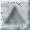
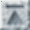
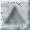
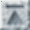

SRC Technical Note
1997 - 018
August 20, 1997
_____________________________________________________________
The 1995 SQL Reunion: People, Projects, and Politics
Edited by Paul McJones
_____________________________________________________________

Systems Research Center
130 Lytton Avenue
Palo Alto, CA 94301
http://www.research.digital.com/SRC/
_____________________________________________________________
Copyright (c) 1995, 1997 by Paul McJones, Roger Bamford, Mike Blasgen, Don Chamberlin, Josephine Cheng, Jean-Jacques Daudenarde, Shel Finkelstein, Jim Gray, Bob Jolls, Bruce Lindsay, Raymond Lorie, Jim Mehl, Roger Miller, C. Mohan, John Nauman, Mike Pong, Tom Price, Franco Putzolu, Mario Schkolnick, Bob Selinger, Pat Selinger, Don Slutz, Irv Traiger, Brad Wade, and Bob Yost. You may copy this document in whole or in part without payment of fee provided that you acknowledge the authors and include this notice.
Abstract
A reunion of people who worked on System R and its derivatives, including SQL/DS, DB2, and R*, was held at Asilomar on May 29, 1995. This is an edited transcript of the day's discussions, incorporating changes provided by the speakers. It provides an informal but first-hand account of the birth of SQL, the history of System R, and the origins of a number of other relational systems inside and outside IBM.
Contents